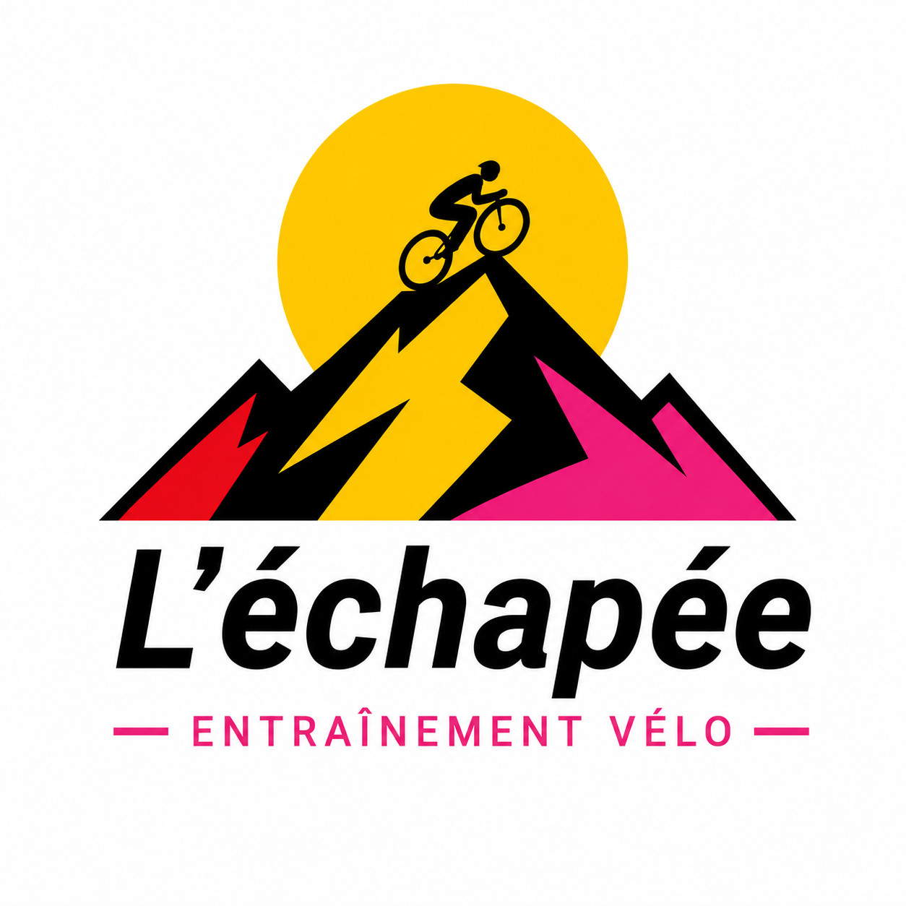

Éditions de légende
Chaque édition de course est un objet à part entière : année, vainqueur, vidéo, synopsis, tags, rivalités.

L’échapéeEntraînement vélo
L’échapée (projet Legend) transforme les éditions iconiques du cyclisme en bibliothèque vivante : vidéos, coureurs, contexte historique — pour s’entraîner indoor en s’immergeant dans la course, pas seulement en suivant un entraînement générique.
L’objectif n’est pas une simple liste de résultats. C’est une archive éditoriale explorable : découvrir une édition mémorable, comprendre qui l’a faite, regarder les images d’époque, puis enchaîner vers d’autres histoires.
Chaque édition de course est un objet à part entière : année, vainqueur, vidéo, synopsis, tags, rivalités.
Du vainqueur aux autres courses qui l’ont défini. Le parcours utilisateur passe de la course au rider, puis à d’autres moments.
La vidéo est le crochet émotionnel : regarder maintenant, puis construire playlists, collections et séances guidées.
Cinq piliers issus du brief produit — l’architecture laisse déjà de la place pour la couche personnelle.
Unité de valeur principale : relire un moment, comparer les ères, découvrir une course inconnue.
Plus qu’un nom sur un résultat : pays, victoires, rivaux, photos, accents couleur de maillot.
Lecture embarquée, métadonnées liées à l’émotion, base pour collections et expériences éditoriales.
Stories mises en avant, collections thématiques, navigation par ère, boucles de recommandation.
Favoris, historique, reprendre une séance, collections sauvegardées — déjà amorcée côté app.
Pensé pour les sessions home-trainer : la course devient le fil narratif de l’effort.
État actuel d’après le README du repo — sans changer les pipelines Firebase Hosting.
Base de présentation publique pour L’échapée. On pourra ensuite ajouter captures d’écran, roadmap datée, ou une page “comment ça marche”.